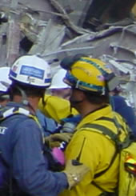

Traumatic Incident Stress
 ShareCompartir
ShareCompartir

Emergency workers must respond quickly to natural disasters, such as earthquakes or hurricanes, and to manmade disasters, such as technological failures or terrorist attacks. These workers are at risk of experiencing stress from what psychologists refer to as a traumatic incident. A traumatic incident is one that may involve exposure to catastrophic events, severely injured children or adults, dead bodies or body parts, or a loss of colleagues. NIOSH recommends that all workers involved in response activities help themselves and their coworkers and reduce the risk of experiencing stress associated with a traumatic incident by utilizing simple methods to recognize, monitor, and maintain health on-site and following such experiences.
Symptoms of Stress
Workers may experience physical, cognitive, emotional, or behavioral symptoms of stress. Some people experience these reactions immediately at the scene, while for others symptoms may occur weeks or months later.
Physical symptoms
Workers experiencing any of the following symptoms should seek IMMEDIATE medical attention:
- Chest pain
- Difficulty breathing
- Severe pain
- Symptoms of shock (shallow breathing, rapid or weak pulse, nausea, shivering, pale and moist skin, mental confusion, and dilated pupils)
Workers may also experience the following physical symptoms. If these symptoms occur over time or become severe, workers should seek medical attention. Additional physical symptoms include:
- Fatigue
- Nausea/vomiting
- Dizziness
- Profuse sweating
- Thirst
- Headaches
- Visual difficulties
- Clenching of jaw
- Nonspecific aches and pains
Cognitive symptoms
If these symptoms occur on the scene workers may not be able to stay clearly focused to maintain their own safety or to rescue injured victims. Workers may experience momentary cognitive symptoms; however, if symptoms are chronic or interfere with daily activities, workers should seek medical attention. These symptoms include:
- Confusion
- Disorientation
- Heightened or lowered alertness
- Poor concentration
- Poor problem solving
- Difficulty identifying familiar objects or people
- Memory problems
- Nightmares
Emotional symptoms
Strong emotions are ordinary reactions to a traumatic or extraordinary situation. Workers should seek mental health support from a disaster mental health professional if symptoms or distress continue for several weeks or if they interfere with daily activities. Emotional symptoms include:
- Anxiety
- Guilt
- Denial
- Grief
- Fear
- Irritability
- Loss of emotional control
- Depression
- Sense of failure
- Feeling overwhelmed
- Blaming others or self
- Severe panic (rare)
Behavioral symptoms
As a result of a traumatic incident, workers may notice the following behavioral changes in themselves or coworkers:
- Intense anger
- Withdrawal
- Emotional outburst
- Temporary loss or increase of appetite
- Excessive alcohol consumption
- Inability to rest, pacing
- Change in sexual functioning
Recommendations to Monitor and Maintain Health On-Site
Responders need to take care of their own health to maintain the constant vigilance they need for their own safety. Responders must be able to stay focused on the job in the dynamic, changing emergency environment. Often responders do not recognize the need to take care of themselves and to monitor their own emotional and physical health. This is especially true if recovery efforts stretch into several weeks. The following guidelines contain simple methods for workers and their team leaders to help themselves and their team members. These guidelines should be read while at the site and again after workers return home.
Control the organization and pace of the rescue and recovery efforts
- Pace yourself. Rescue and recovery efforts at the site may continue for days or weeks.
- Watch out for each other. Coworkers may be intently focused on a particular task and may not notice a hazard nearby or behind.
- Be conscious of those around you. Responders who are exhausted, stressed, or even temporarily distracted may place themselves and others at risk.
- Take frequent rest breaks. Rescue and recovery operations take place in extremely dangerous work environments. Mental fatigue, particularly over long shifts, can greatly increase emergency workers' risk of injury.
Maintain adequate nutrition and rest
- Eat and sleep regularly. Maintain as normal a schedule as possible and adhere to the team schedule and rotation.
- Drink plenty of fluids such as water and juices.
- Try to eat a variety of foods and increase your intake of complex carbohydrates (for example, breads and muffins made with whole grains, granola bars).
- Whenever possible, take breaks away from the work area. Eat and drink in the cleanest area available.
Monitor mental/emotional health
- Recognize and accept what you cannot change—the chain of command, organizational structure, waiting, equipment failures, etc.
- Talk to people when YOU feel like it. You decide when you want to discuss your experience. Talking about an event may be reliving it. Choose your own comfort level.
- If your employer provided you with formal mental health support, use it!
- Give yourself permission to feel rotten: You are in a difficult situation.
- Recurring thoughts, dreams, or flashbacks are normal—do not try to fight them. They will decrease over time.
- Communicate with your loved ones at home as frequently as possible.
Recommendations to Maintain Health Following the Incident
Over time, workers' impressions and understanding of their experience will change. This process is different for everyone. No matter what the event or an individual's reaction to it, workers can follow some basic steps to help themselves adjust to the experience:
- Reach out—people really do care.
- Reconnect with family, spiritual, and community supports.
- Consider keeping a journal.
- Do not make any big life decisions.
- Make as many daily decisions as possible to give yourself a feeling of control over your life.
- Spend time with others or alone doing the things you enjoy to refresh and recharge yourself.
- Be aware that you may feel particularly fearful for your family. This is normal and will pass in time.
- Remember that "getting back to normal" takes time. Gradually work back into your routine. Let others carry more weight for a while at home and at work.
- Be aware that recovery is not a straight path but a matter of two steps forward and one back. You will make progress.
- Appreciate a sense of humor in yourself and others. It is okay to laugh again.
- Your family will experience the disaster along with you. You need to support each other. This is a time for patience, understanding, and communication.
- Avoid overuse of drugs or alcohol. You do not need to complicate your situation with a substance abuse problem.
- Get plenty of rest and normal exercise. Eat well-balanced, regular meals.
NIOSH Publications
Traumatic Incident Stress: Information for Emergency Response Workers
Publication No. 2002-107 (October, 2001)
As a member of an emergency response team, you and your team members are at risk of experiencing what psychologists refer to as a traumatic incident—an incident that may involve exposure to catastrophic events, severely injured children or adults, dead bodies or body parts, or the loss of colleagues, for instance.
A Study of Burnout in Accident Investigators in the US Mining Industry
NIOSHTIC-2 No. 20022901 (January, 2002)
The Maslach Burnout Inventory (MBI) was administered and scored for 154 Mine Safety and Health Administration (MSHA) employees from the US Department of Labor.
Toward a Typology of Dynamic and Hazardous Work Environments
NIOSHTIC-2 No. 20021061 (December, 2001)
The most hazardous work environments share one feature in common: constant change. Many different, but constantly changing hazards are found in agriculture, construction, mining, and transport.
Judgment and Decision-Making Under Stress: An Overview for Emergency Managers
NIOSHTIC-2 No. 20022944 (2003)
This paper discusses human judgment and decision making under stress. The authors review selected recent literature across various disciplines and suggest a definition of stress within the context of decision making during the management of emergencies.
The Safety and Health of Emergency Workers
NIOSHTIC-2 No. 20021775 (September, 2001)
Emergency personnel, like all workers, carry out their duties within an environment composed of a set of discrete elements. First, there is the emergency itself.
Decision Making During a Simulated Mine Fire Escape
NIOSHTIC-2 No. 20022804 (1998)
Forty-eight workers who had escaped large underground coal-mine fires were interviewed using an open-ended protocol.
The Communication Triangle: Elements of an Effective Warning Message
NIOSHTIC-2 No. 20031506 (January, 2007)
The lack of good communication is a very real problem in mine emergencies. Sometimes critical information is not communicated to those who need it to make decisions.
A Human Component to Consider in Your Emergency Management Plans: The Critical Incident Stress Factor (1995)
NIOSHTIC-2 No. 20024595 (1995)
In recent years the issue of human stress response in emergency workers has begun to receive attention. This paper presents a rationale for considering human stress as a significant factor in the management of emergencies.
A Human Component to Consider in Your Emergency Management Plans: The Critical Incident Stress Factor (1998)
NIOSHTIC-2 No. 20032087 (1998)
In recent years the issue of human stress response in emergency workers has begun to receive attention. This paper presents a rationale for considering human stress as a significant factor in the management of emergencies.
Additional Resources
National Institute for Occupational Safety and Health (NIOSH)
1-800-CDC-INFO
Disaster Mental Health Services
Substance Abuse and Mental Health Services Administration (SAMHSA)
National Center for Post Traumatic Stress Disorder (PTSD)
Department of Veterans Affairs
Disaster Mental Health Institute, University of South Dakota
Center for the Study of Traumatic Stress
Uniformed Services University of the Health Sciences
Psychology Matters: Trauma, Grief, and Resilience
American Psychological Association
Resilience Resources for Emergency Response
Occupational Safety & Health Administration
Coping with Traumatic Events
National Institute of Mental Health
- Page last reviewed: December 30, 2013
- Page last updated: December 30, 2013
- Content source:
- National Institute for Occupational Safety and Health Division of Applied Research and Technology